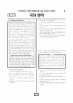

문제지

2025학년도 9월 모의평가 · 2024년 9월 시행
2025학년도 9모 국어 화법과작문 1등급컷은 원점수 100점(추정), 표준점수 최고점은 129점입니다.
원점수 1등급컷은 공식 발표값이 아니라 EBSi·입시기관 값입니다. 등급별 값은 등급컷 표, 출처 구분은 데이터 원칙에 있습니다.

시험지를 먼저 풀어 보세요. 등급컷·표준점수·난이도는 흐리게 가려 뒀어요.
| 등급 | 원점수 | 표준점수 | 백분위 | 누적 |
|---|---|---|---|---|
| 1 | 100 | 126 | 96 | 4.05% |
| 2 | 95 | 123 | 90 | 11.24% |
| 3 | 88 | 117 | 76 | 24.69% |
| 4 | 79 | 109 | 59 | 41.47% |
| 5 | 67 | 99 | 41 | 60.11% |
| 6 | 50 | 85 | 23 | 77.99% |
| 7 | 30 | 68 | 11 | 89.44% |
| 8 | 14 | 60 | 4 | 96.48% |
등급별 컷 · 입시기관 3곳 원점수 추정 종합(이투스·종로학원·대성마이맥) · 공통+선택 점수 조합에 따라 다를 수 있음 · 만점 100점
정답 변경 없음
이의신청 13문항
시험 전체 관련 보도 4건은 2025학년도 9월 모의평가 회차 페이지에 모아 두었어요.
국어 영역 전체 응시자 기준입니다. 한국교육과정평가원이 교육부 보도자료로 공개한 표준점수 도수분포로 계산했습니다.
EBSi 응답자 기준으로 가장 많이 틀린 문항은 10번(2점)이고, 오답률은 53.5%입니다. 오답률 50%를 넘은 문항은 2개입니다.
| 순위 | 문항 | 배점 | 오답률 | 정답 | 많이 고른 오답 |
|---|---|---|---|---|---|
| 1 | 10번 | 2점 | 53.5% | ② | ④ 29.8% |
| 2 | 45번 | 3점 | 50.2% | ④ | ⑤ 28.4% |
| 3 | 40번 | 3점 | 49.5% | ⑤ | ④ 26.7% |
| 4 | 5번 | 2점 | 47.4% | ④ | ② 24.2% |
| 5 | 12번 | 2점 | 46.3% | ① | ③ 26% |
| 6 | 9번 | 2점 | 46% | ⑤ | ② 19.1% |
| 7 | 31번 | 3점 | 45.2% | ② | ⑤ 17.9% |
| 8 | 11번 | 3점 | 41.3% | ③ | ② 16.3% |
| 9 | 16번 | 3점 | 40.5% | ⑤ | ④ 12.9% |
| 10 | 15번 | 2점 | 39.2% | ① | ④ 17.3% |
| 11 | 14번 | 2점 | 38.7% | ⑤ | ④ 13.6% |
| 12 | 26번 | 2점 | 35.9% | ⑤ | ④ 14.2% |
| 13 | 8번 | 2점 | 32.7% | ④ | ② 13.2% |
| 14 | 27번 | 2점 | 30.7% | ③ | ⑤ 12.8% |
| 15 | 25번 | 3점 | 28.4% | ④ | ③ 13% |
EBSi 가채점 응답자 기준 · 전 문항 중 오답률 상위 15문항
출처: EBSi 역대 등급컷·오답률 공개 화면. 가채점에 참여한 EBSi 이용자 응답이라 전체 응시자 정답률과는 다를 수 있습니다.
발행 기관: 한국교육과정평가원(KICE). 파일 위치: 이 사이트가 보관한 사본. 저작권은 발행 기관에 있습니다. 원본과 다르거나 게시 중단이 필요하면 연락처로 알려 주세요. 등급컷 출처 구분은 데이터 원칙에서 설명합니다.
막대 색은 역대 대비 난이도 · 진한 막대가 이 시험 · 막대를 누르면 그 회차로 이동
공통과목 독서는 그림·사진 같은 시각 자료가 학습 목적의 읽기에 미치는 영향을 다룬 독서론(1~3번), 공정거래위원회가 '공정거래법'과 '표시광고법'으로 재판매 가격 유지 행위와 부당 광고를 규제하는 방식을 다룬 법 지문(4~7번), 블록체인의 블록 생성과 노드의 승인 과정을 다룬 기술 지문(8~11번), (가) 영화를 '세상을 향해 열린 창'으로 본 바쟁의 리얼리즘 영화 이론 등을 다룬 주제 통합형 예술 지문(12~17번)으로 구성되었습니다.
네 지문 모두 EBS 연계 소재여서 연계 체감도가 높았습니다. 오답률이 가장 높았던 독서 문항은 블록체인 지문의 10번(2점, 53.5%)으로, 블록체인이 여러 노드에 중복 저장되기 때문에 생기는 특성의 이유를 고르는 문항이었습니다. 법 지문의 5번(47.4%)은 재판매 가격 유지 행위와 이용 후기 광고 규제를 비교하는 문항이었습니다.
문학은 수산의 고전소설 「광한루기」(18~21번), 백석 「북방에서-정현웅에게」·문태준 「살얼음 아래 같은 데 2-생가」와 유본예의 수필 「이문원노종기」를 묶은 복합 세트(22~27번), 윤흥길의 현대소설 「날개 또는 수갑」(28~31번), 정철의 시조와 사설시조, 조존성의 「호아곡」을 묶은 고전시가(32~34번)로 구성되었습니다. 입시기관들은 <보기>의 준거를 「날개 또는 수갑」에 적용해야 하는 31번이 까다로웠다고 평가했습니다.
화법과 작문은 안전벨트의 원리를 소개하는 발표(35~37번), '조선 시대 천문학' 전시 체험 공간을 준비하는 동아리 대화와 행사 뒤 소감문(38~42번), 다양한 형태의 체육 공간 조성을 건의하는 글(43~45번)으로 구성되었습니다.
화법과 작문 응시자 기준 오답률 50%를 넘은 문항은 2개뿐이었고, 입시기관 추정 1등급컷이 만점에 가까울 만큼 쉬웠습니다. 상대적으로 많이 틀린 45번(50.2%)은 설문 조사·신문 기사·전문가 인터뷰를 건의문 보완에 활용하는 방안을 판단하는 문항이었습니다.
화법과 작문은 오답률 50%를 넘은 문항이 2개뿐일 만큼 쉬웠고, 설문·기사·인터뷰를 건의문 보완에 쓰는 45번(50.2%)이 상대적으로 어려웠습니다. 같은 해 수능 국어 최고점이 139점으로 올랐던 만큼, 이 회차는 점수보다 공통과목을 빨리 끝내고 고난도 지문에 쓸 시간을 확보하는 연습용으로 활용하는 것이 좋습니다.